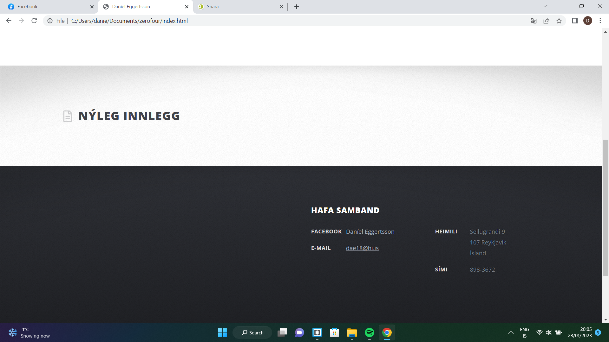

Einstaklingsverkefni 1
Að búa til þessa vefsíðu
Fyrsta verkefni þessa námskeiðs var að búa til heimasíðu með HTML sem inniheldur ferilskrá nemanda. Það var bæði í boði að gera síðuna frá grunni og fá lánað fyrirfram tilbúið sniðmát af netinu. Þar sem ég hafði enga reynslu af HTML þá ákvað ég að velja tilbúið sniðmát af HTML5up.net. Ég byrjaði á að horfa á leiðbeiningamyndbönd frá kennara og skoðaði síðan valin verkefni frá síðustu árum sem kennarinn áleit mjög góð. Næst náði ég mér í ritilinn Brackets eins og mælt var með í verkefnislýsingu, en í Brackets er hægt að vinna með HTML og breyta síðunni eftir þörfum. Eftir að hafa skoðað þónokkur sniðmát á HTML5up.net valdi ég sniðmátið ZEROFOUR. Upphaflega leit forsíðan út svona:
Þessi forsíða inniheldur hlekki á mögulega pósta eða greinar. Ég ákvað hins vegar að einfalda forsíðuna og valdi "NO SIDEBAR" uppi í hægra horninu og gerði það að forsíðu. Þetta gerði forsíðuna að einföldum textavegg sem yrði með sama sniði og aðrir hlekkir á síðunni. Þetta útli fannst mér líka meira í takt við tilgang síðunnar og gaf henni heimasíðulegt útlit.
Ég losaði mig við "LEFT SIDEBAR" og "RIGHT SIDEBAR" en hélt "DROPDOWN". Ég taldi það snyrtilegra að hafa DROPDOWN til að velja verkefni námskeiðsins sem eru 4 talsins í stað þess að hafa hlekkina á verkefnin raðaða lárétt uppi í valmyndinni. Ég sá í verkefnum fyrri ára að einhverjir skiptu lokaverkefninu niður í hluta sem kemur vel út í þessu sniðmáti þar sem DROPDOWN valmyndin getur skipst niður í önnur dropdown. Þetta skýrist betur á mynd fyrir neðan.
Fram að þessu hafði ég fiktað mig áfram í HTML en þegar ég byrjaði vinna í forsíðunni og öðrum hlekkjum síðunnar þá leitaði ég mér upplýsinga með google og W3Schools til að breyta hlutum eins og margins og image size í CSS skjalinu. StackOverflow kom líka að góðum notum þegar ég leitaði svara við spurningum. Ég breytti litnum á þessum texta, úr GRÁU í SVART vegna þess að mér fannst þægilegra að lesa hann þannig. Ég sleppti því að breyta litum eða öðrum útlitsþáttum síðunnar enda finnst mér litirnir flottir eins og þeir eru. Ég tók "spotlight" burt og snyrti til borðann neðst á síðunni. Myndirnar að neðan sýna þessa breytingu
Því næst fékk ég lánað sniðmát fyrir ferilskrá af netinu. Sniðmátið var LATEX skjal sem ég þurfti einfaldlega að fylla út í og breyta úr ensku yfir í íslensku. Ég setti hlekk á þetta skjal í "Um mig" á þessari síðu. Mér tókst ekki að opna HTML skrána fyrir skjalið þar sem Brackets styður ekki UTF-16 kóðaðar skrár.
Eftir að ég var orðinn sáttur með síðuna þá var næsta skref að koma þessari síðu á netið. Ég niðurhalaði Git og stofnaði Github aðgang en ég lenti í vandræðum Git og niðurhalaði þess vegna Git desktop eins og ráðlagt var í kennslumyndbandi á youtube. Ég fann myndbandið með því að leita að "create github website".